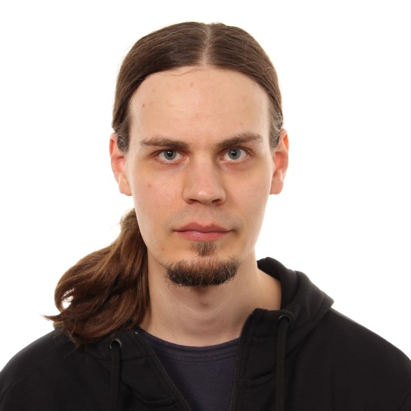

Marko Järvenpää 
D.Sc. (Tech.), Researcher- University of Oslo
- Department of Biostatistics
- Sognsvannsveien 9, Domus Medica, 0372 Oslo, Norway
- Email: m.j.jarvenpaa [at] medisin.uio.no
- GitHub Google Scholar ResearchGate ArXiv
- Department of Biostatistics
About me
I am broadly interested in computational (Bayesian) statistics and probabilistic machine learning. My current line of research consists of the two following topics:- Computationally efficient methods for Approximate Bayesian Computation (ABC) and likelihood-free inference using Gaussian process surrogate models and Bayesian decision theory. This topic is closely related to Bayesian optimisation and Bayesian quadrature methods.
- Probabilistic models and inference algorithms for applications in computational biology.
Publications
- Järvenpää, M., Vehtari, A., and Marttinen, P. (2020). Batch simulations and uncertainty quantification in Gaussian process surrogate approximate Bayesian computation. In Proceedings of Conference on Uncertainty in Artificial Intelligence (UAI 2020). Online Arxiv preprint Poster
-
Järvenpää, M., Gutmann, M.U., Vehtari, A., and Marttinen, P. (2020).
Parallel Gaussian process surrogate Bayesian inference with noisy likelihood evaluations.
Bayesian Analysis, to appear.
Online
Arxiv preprint
(Note that the previous version of this paper was titled Parallel Gaussian process surrogate method to accelerate likelihood-free inference.)
- Karhu, K., Hilasvuori, E., Järvenpää, M., Arppe, L., Christensen, B.T., Fritze, H., Kulmala, L., Oinonen, M., Pitkänen, J.-M., Vanhala, P., Heinonsalo, J., and Liski J. (2019). Similar temperature sensitivity of soil mineral-associated organic carbon regardless of age. Soil Biology and Biochemistry, 136:107527. Online
- Järvenpää, M., Sater, M.R.A., Lagoudas, K.G., Blainey, P.C., Miller, L.G., McKinnell, J.A., Huang, S.S., Grad, Y.H. and Marttinen P. (2019). A Bayesian model of acquisition and clearance of bacterial colonization incorporating within-host variation. PLoS Computational Biology, 15(4):e1006534. Online
- Järvenpää, M., Gutmann, M.U., Pleska, A., Vehtari, A., and Marttinen, P. (2019). Efficient acquisition rules for model-based approximate Bayesian computation. Bayesian Analysis, 14(2):595-622. Online Arxiv preprint
- Lintusaari, J., Vuollekoski, H., Kangasrääsiö, A., Skytén, K., Järvenpää, M., Marttinen, P., Gutmann, M., Vehtari, A., Corander, J., and Kaski, S. (2018). ELFI: Engine for Likelihood Free Inference. Journal of Machine Learning Research 19(16):1−7. Online Arxiv preprint
- Järvenpää, M., Gutmann, M.U., Vehtari, A., and Marttinen, P. (2018). Gaussian process modeling in approximate Bayesian computation to estimate horizontal gene transfer in bacteria. Annals of Applied Statistics 12(4):2228–2251. Online Arxiv preprint
- Potapov, I., Järvenpää, M., Åkerblom, M., Raumonen, P., Kaasalainen, M. (2017). Bayes Forest: A data-intensive generator of morphological tree clones. GigaScience 6(10):1-13.
- Potapov, I., Järvenpää, M., Åkerblom, M., Raumonen, P., Kaasalainen, M. (2015). Data-based stochastic modeling of tree growth and structure formation. Silva Fennica 50(1).
- Piché, R., Järvenpää, M., Turunen, E., Šimůnek, M. (2014). Bayesian analysis of GUHA hypotheses. Journal of Intelligent Information Systems. 42(1):47-73.
Workshop papers
- Järvenpää, M., Vehtari, A., and Marttinen, P. (2019). Batch simulations and uncertainty quantification in Gaussian process surrogate-based approximate Bayesian computation. 2nd Symposium on Advances in Approximate Bayesian Inference. Online
- Järvenpää, M., Sater, M.R.A., Lagoudas, K.G., Blainey, P.C., Miller, L.G., McKinnell, J.A., Huang, S.S., Grad, Y.H. and Marttinen P. (2019). A Bayesian model of acquisition and clearance of bacterial colonization incorporating within-host variation. The 2019 ICML Workshop on Computational Biology. Online
- Järvenpää, M., Sater, M.R.A., Lagoudas, K.G., Blainey, P.C., Miller, L.G., McKinnell, J.A., Huang, S.S., Grad, Y.H. and Marttinen P. (2018). A Bayesian model of acquisition and clearance of bacterial colonization. ML4Health: Machine Learning for Health NeurIPS 2018 workshop. Online
- Järvenpää, M., Gutmann, M.U., Pleska, A., Vehtari, A., and Marttinen, P. (2017). Efficient acquisition rules for model-based approximate Bayesian computation. Advances in Approximate Bayesian Inference NIPS 2017 Workshop. Online
- Järvenpää, M., Gutmann, M.U., Vehtari, A., and Marttinen, P. (2017). Gaussian process modeling in approximate Bayesian computation to estimate horizontal gene transfer in bacteria. NIPS 2017 Workshop on Machine Learning in Computational Biology. Workshop webpage
- Lintusaari, J., Vuollekoski, H., Kangasrääsiö, A., Skytén, K., Järvenpää, M., Gutmann, M., Vehtari, A., Corander, J., and Kaski, S. (2017). ELFI: Engine for Likelihood Free Inference. ICML 2017 Workshop on Implicit Models. Online
- Kangasrääsiö, A., Lintusaari, J., Skytén, K., Järvenpää, M., Vuollekoski, H., Gutmann, M., Vehtari, A., Corander, J., and Kaski, S. (2016). ELFI: Engine for Likelihood Free Inference. Advances in Approximate Bayesian Inference NIPS 2016 Workshop. Online
Doctoral dissertation
Teaching (at Aalto University)
- Machine Learning: Advanced Probabilistic Methods, spring 2018, 2019, 2020, teaching assistant. Lectured by Prof. Pekka Marttinen.
- Bayesian Data Analysis, autumn 2016, teaching assistant. Lectured by Prof. Aki Vehtari.
- Supervisor of two B.Sc. theses and advisor of one M.Sc. thesis in computer science.
Last modified: 23 October 2020